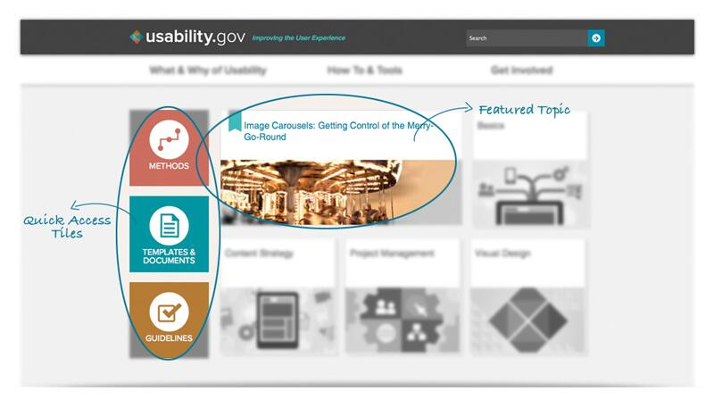
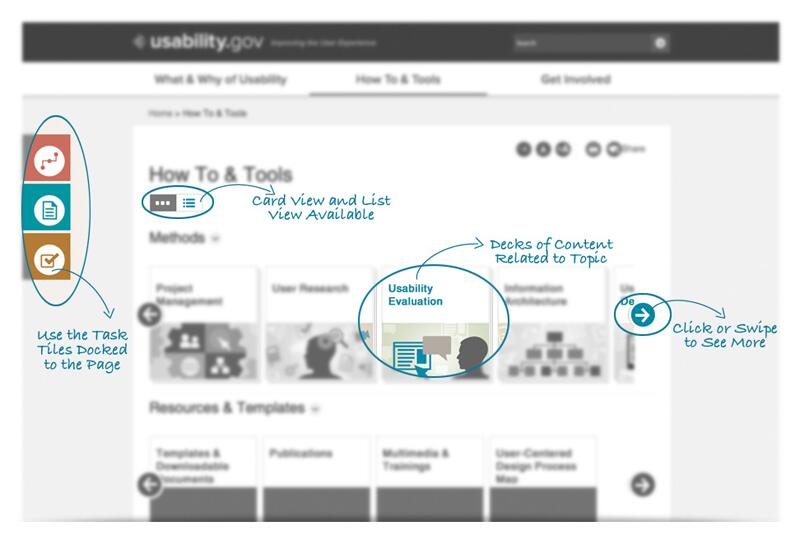
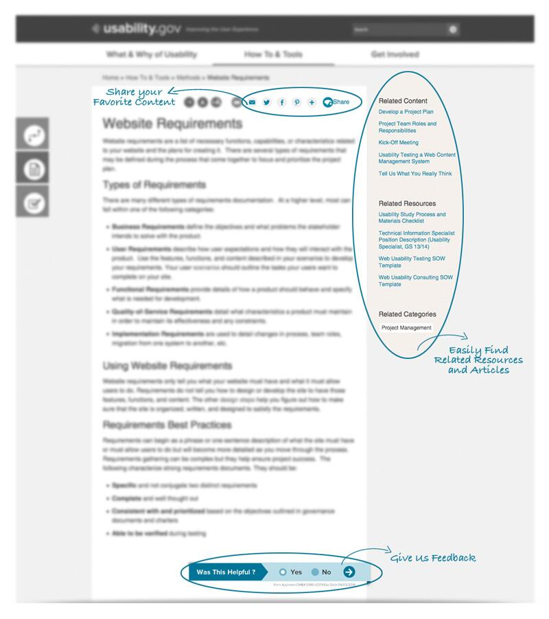

Stay Connected 

U.S. Department of Health & Human Services - 200 Independence Avenue, S.W. - Washington, D.C. 20201
Usability.gov assists web managers, user experience professionals and students, and others by providing the information and tools they need to create online experiences that are usable, responsive, intuitive, and accessible.
The site content is focused on what you need to create useful and usable digital content. It provides:
The site has been designed to be more interactive and to anticipate what you are looking for.



To learn more about our reboot of the usability.gov program and site, please watch our DigitalGov University webinar.